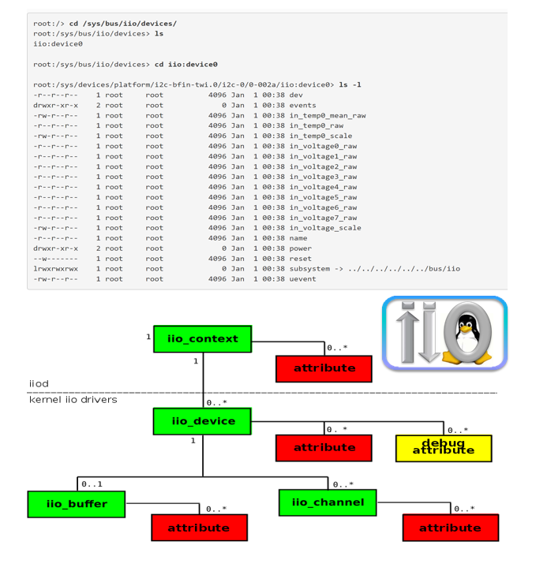
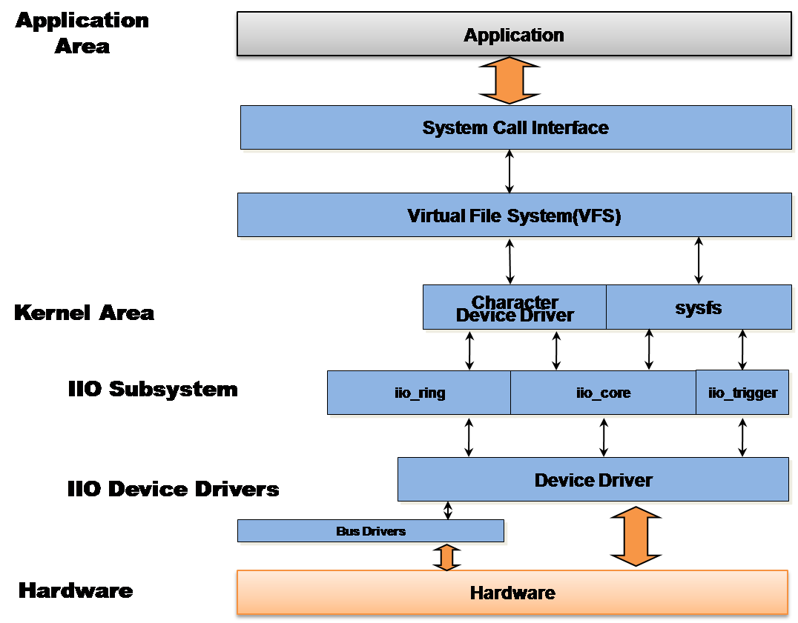

Linux Industrial I/O Subsystem#
The Industrial I/O subsystem is intended to provide support for devices that in some sense are analog to digital or digital to analog converters (ADCs, DACs).
Devices that fall into this category are:
ADCs
Accelerometers
Gyros
IMUs
Capacitance to Digital Converters (CDCs)
Pressure Sensors
Color, Light and Proximity Sensors
Temperature Sensors
Magnetometers
DACs
DDS (Direct Digital Synthesis)
PLLs (Phase Locked Loops)
Variable/Programmable Gain Amplifiers (VGA, PGA)
The overall aim is to fill the gap between the somewhat similar hwmon and input subsystems. Hwmon is very much directed at low sample rate sensors used in applications such as fan speed control and temperature measurement. The input is focused on human interaction input devices (as its name suggests):
Keyboard
Mouse
Touch Screen
Joystick
In some cases, there is considerable overlap between these and IIO.
A typical device falling into the IIO category would be connected via SPI or I2C. However typical DMA operated devices such as ones connected to a high speed synchronous serial (McBSP, SPORT) or high speed synchronous parallel (EPI, PPI) or FPGA peripherals are also subject to this subsystem. Since latter ones unlike SPI or I2C are not generally abstracted by Linux bus drivers they are subject to processor platform dependent implementations.
IIO Subsystem Overview#
{kind=link}
Functionality of IIO#
Basic device registration and handling.
Polled access to device channels via sysfs.
Event chrdevs.
These are similar to input in that they provide a route to user space for hardware triggered events. Such events include threshold detectors, free-fall detectors and more complex action detection. The events themselves are currently very simple with merely an event code and a timestamp. Any data associated with the event must be accessed via polling.
Tip
A given device may have one or more event channel. These events are turned on or off (if possible) via sysfs interfaces.
Hardware ring buffer support.
Some recent sensors have included fifo / ring buffers on the sensor chip.
These greatly reduce the load on the host CPU by buffering relatively large numbers of data samples based on an internal sampling clock.
Each ring buffer typically has an event chrdev (similar to the more general ones above) to pass on events such as buffer 50% full and an access chrdev via which the raw data it self may be read back.
Trigger and software ring buffer (kfifo) support.
Trigger and software ring buffer support#
In many data analysis applications it is useful to be able to capture data based on some external signal (trigger).
These triggers might be a:
Data ready signal.
GPIO line connected to some external system.
On processor periodic interrupt.
User space reading a specific file in sysfs.
A single trigger many initialize data capture or reading from a number of sensors. These triggers are used in iio to fill software ring buffers acting in a very similar fashion to the hardware buffers described above. Triggers can be completely unrelated to the sensor itself.
Standalone trigger drivers#
name |
description |
|---|---|
iio-trig-gpio |
Provides support for using GPIO pins as IIO triggers. |
iio-trig-rtc |
Provides support for using periodic capable real time clocks as IIO triggers. |
Provides support for using SYSFS entry as IIO triggers. |
|
Provides support for using a Blackfin timer as IIO triggers. |
Industrial I/O Subsystem In-Kernel Interfaces#
The IIO subsystem can act as a layer under other elements of the kernel providing a means of obtaining ADC type readings or of driving DAC type signals. The functionality supported will grow as use cases arise.
IIO Ring Buffer / kfifo#

IIO uses a ring buffer also called circular buffer which is a data structure that uses a single, fixed-size buffer as if it were connected end-to-end.
This structure is well suited for buffering data streams. These buffers are typically used to solve the producer-consumer problem. In some applications it is desired for the producer (e.g., an ADC) to overwrite old data if the consumer (e.g., the User Space Application) is unable to momentarily keep up.
But typically the buffer is sized to provide adequate space so that this circumstance should never happen.